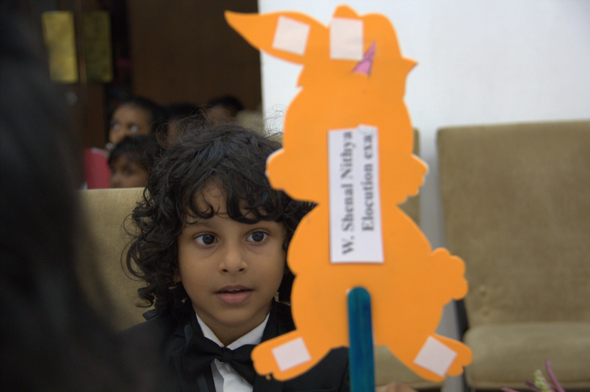
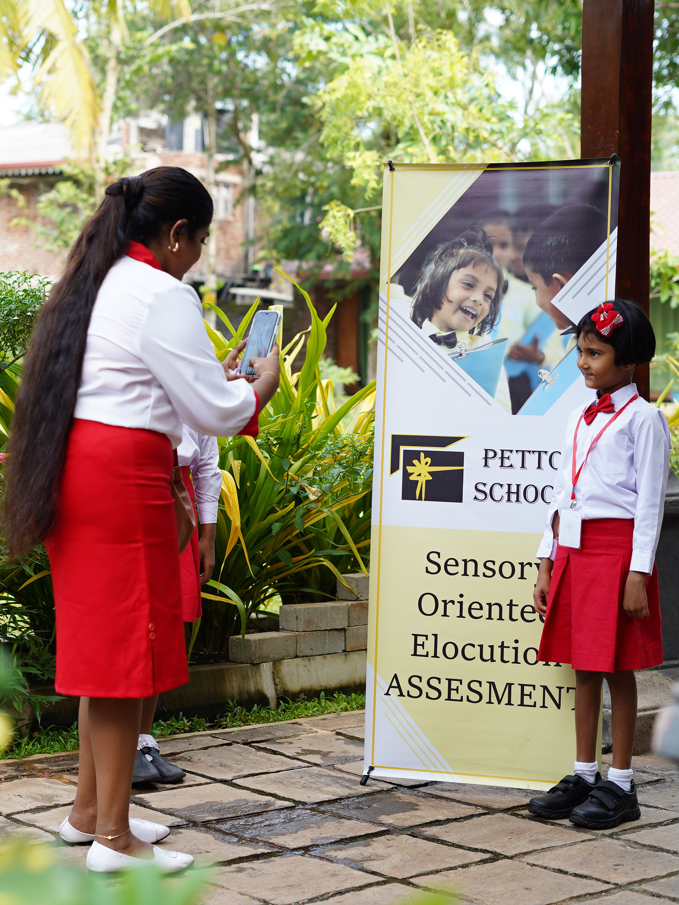
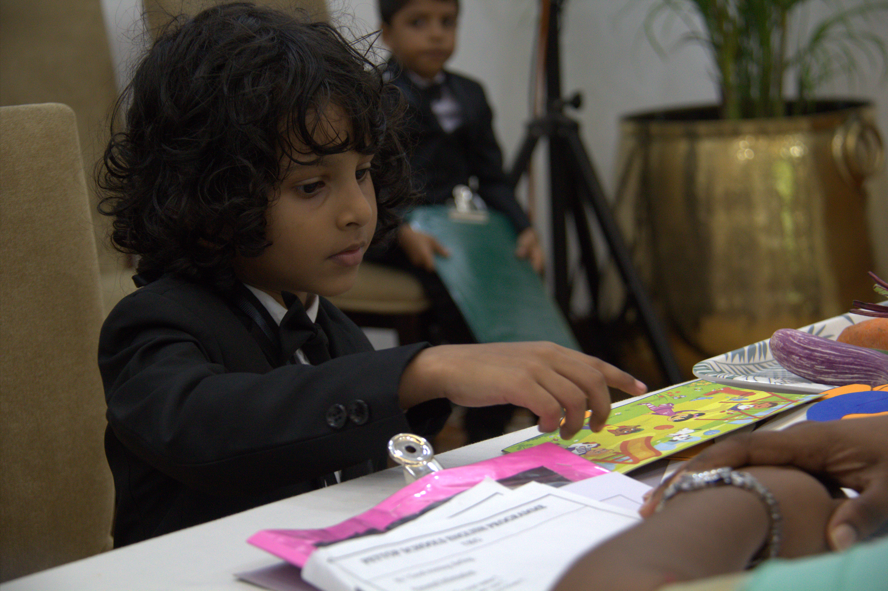
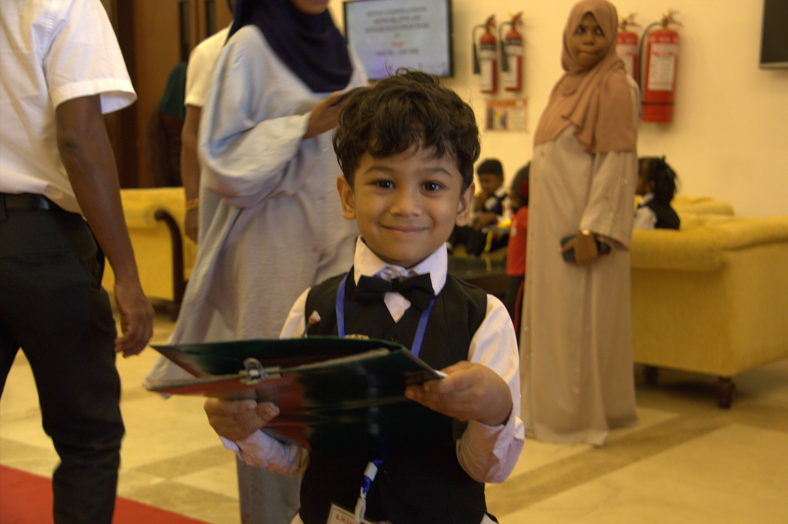

Stage 01 • Phonetic ReadinessEarly Childhood Speech Examination
Evaluating natural vocal response, auditory recognition, and comfort speaking in full sensory phrases.
Help children grasp English as a natural lifestyle—not rote memory or classroom practice—preventing future learning boundaries before they ever form.
When an educator commands a clear, sensory-driven methodology, it transforms how they speak, how children respond, and how parents value their school.
Designed for ambitious early childhood professionals across Sri Lanka, the PETTOP LONDON curriculum replaces outdated memorization drills with explainable, sensory-oriented immersion. You will elevate your own spoken assurance in English while giving parents transparent proof of their child's progress.
Develop effortless classroom fluency and poise through structured sensory delivery frameworks.
Articulate the science behind every activity, winning the immediate respect and loyalty of families.


Stage 01 • Phonetic ReadinessEvaluating natural vocal response, auditory recognition, and comfort speaking in full sensory phrases.

Stage 02 • Active ExpressionMeasuring how effortlessly children connect tactile objects and real-world actions to spoken English without translation.

Stage 03 • Sensory ComprehensionObserving spontaneous movement, spatial cues, and joyful peer interaction during guided English storytelling.
 Stage 04 • Parent Verification
Stage 04 • Parent Verification
Transparent assessment indicators that allow teachers to clearly showcase every child's growth to parents.
Inside our Sri Lanka training cohorts and partner classrooms—where sensory-oriented English becomes a daily lifestyle.

Hands-on workshops, collaborative cohorts, and practical sensory curriculum development designed to elevate preschool educators.

Immersion labs where teachers practice vocal modulation, gesture cues, and confidence-building delivery.

Bringing together passionate preschool educators and school leaders from across Sri Lanka.

Designing tactile, everyday lifestyle routines that eliminate future learning boundaries for children.

Mastering explainable assessment methods that earn immediate parent confidence and school prestige.
Step into the PETTOP LONDON International Network. Master sensory-oriented English teaching and earn lasting parent trust.